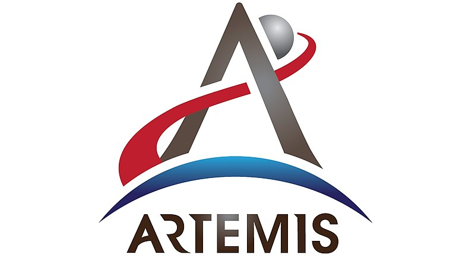
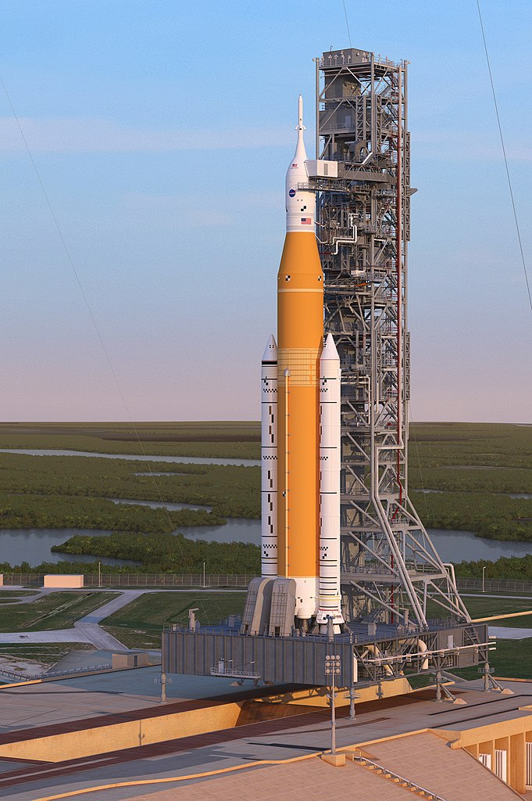
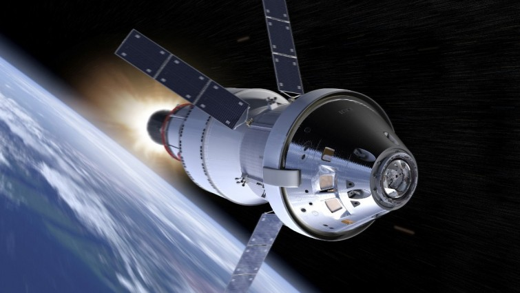
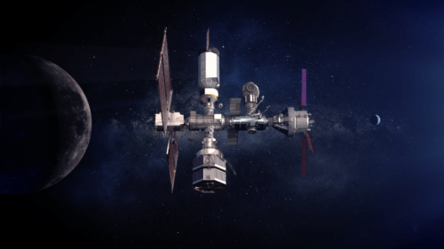
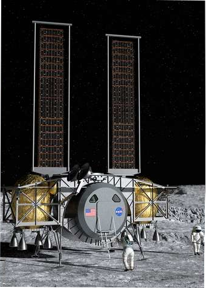

Artemis

Artemis soll zum Mond und zum Mars fliegen und wird von "NASA" und Boeing "entwickelt", die Rakete ist die SLS
(Space Launch System):

Die Kapsel heißt Orion und kann 4 Personen transportieren, ein Foto von Orion:

Zum Landen hat Artemis eine Raumstation "Gateway":

Die NASA hat unternehmen gesucht um zu landen (SpaceX hat ihre Rakete und Lander (sie benutzen also nicht die SLS) hier die unternehmen die durch gekommen
sind
1 Dynetics

2 National Team
(Blue Origin, Lockeed Martin, Northrop Grumman, Draper)